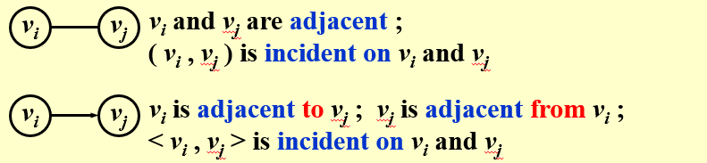
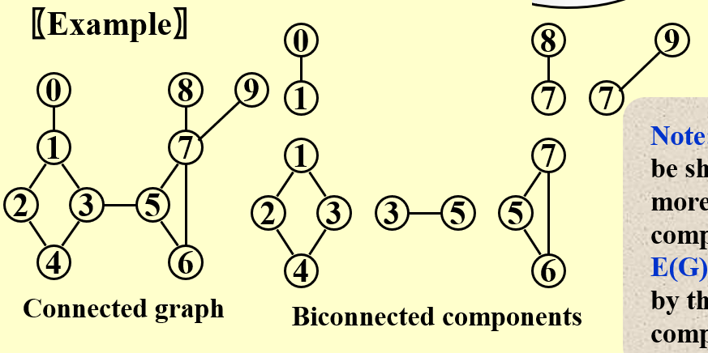

图¶
约 2076 个字 208 行代码 预计阅读时间 13 分钟
Graph 图¶
Definition¶
- G(V,E) : G代表图，V代表finite nonempty set of vertices(vertex的复数，顶点)，E代表finite set of edges
- Undirected Graph : \((v_i,v_j)=(v_j,v_i)\)
- Directed Graph(digraph) : \(<v_i,v_j>\ne <v_j,v_i>\)
- Restriction : (1) Self loop is not illegal; (2) Multigraph is not considered.
- Complete Graph : 边数最大的graph
- 对于无向图，若V=n，则\(E_{MAX}= C_n^2\)；
- 对于有向图，若V=n，则\(E_{MAX} = 2*C_n^2 = P_n^2\)
- adjacent : 相邻的

- Subgraph : \(G'\subset G\) if and only if \(V(G')\subset V(G)\ \&\& \ E(G')\subset E(G)\)
- Path from \(v_q\ to\ v_p\) : \(\{v_p, v_{i1}, v_{i2},..., v_{in}, v_q\}\) such that \((v_p, v_{i1}),(v_{i1}, v_{i2}),\)...\(, (v_{in}, v_q)\) or \(<v_p, v_{i1}>,<v_{i1}, v_{i2}>,\)...\(, <v_{in}, v_q>\) belong to \(E(G)\)
- Length of Path : path中边的个数(注意，是边)
- Simple Path : 路径没有重复的点(不包括首尾)
- Circle : 首尾相同的path
- (Connected) Component of an undirected G : 最大的connected subgraph
- A tree : a graph that is connected and acyclic 连通无环
- A DAG : a directed acyclic graph 有向无环图
- Strongly Connected : 对于每一对\(v_i\ v_j\)，都分别存在从\(v_i\ to\ v_j\ 以及\ v_j\ to\ v_i\)的directed path
- Weakly Connected : 与上面相同，但是是无方向图中（直接将有方向图看作无方向图）
- Degree(v) : 与v相连的边的个数；如果是有方向图，则用in-degree表示指向v的边的个数，out-degree表示从v指出的边的个数。
- 也因此可以得到边的总数为degree(v)的和的一半(一条边由两个vertex共有)
- topological order : 拓扑序，a linear ordering of the vertices of a graph such that, for any two vertices, i, j, if i is a predecessor of j in the network then i precedes j in the linear ordering.
AOV network (Active on vertices)¶
在Digraph中，用顶点表示活动，用有向边\(<v_{i}, v_{j}>\)表示活动 i 是活动 j 的必须条件。这种有向图称为用顶点表示活动的网络，即 AOV network。
根据定义，一个可行的AOV network必须是 DAG (directed acyclic graph)。
为了解决这个问题，我们引入了拓扑序。
TopSort¶
伪代码如下:
判断序列Seq是否是拓扑序¶
在实战中尽量用数组表示吧，用链表连接写的烂完了😂
Network Flow Problems 网络最大流问题¶

给定一个带权图，以及头s和尾t，求从s到t共有多少flow可以进入
\(G_f：流量图\ \ G_r：余量图\ \ ，初始时G_f为空，G_r和G相同\)
- 选择路径：在图\(G_r\)中任意选择一条源点到目标点的路径
- 更新\(G_f\)：在\(G_f\)中添加该路径，路径的大小由最小流量决定
- 更新\(G_r\)：如果路径的一部分为 \(a->b\) 整条路径最小流量为q，\(a->b\)的本身流量为p，则\(G_r\)中添加\(b->a\)，流量为q，\(a->b\)的流量更新为p-q(如果为0则删去这条路径)
- 重复1、2、3直到\(G_r\)中找不到路径
dfs算法实现 Depth-First Search¶
bfs算法实现¶
Minimum Spanning Tree 最小生成树¶
定义 一个连通图的生成树是一个极小的连通子图，它包含图中所有n个顶点，但只有构成一棵树的n-1条边。
所谓一个带权图的 最小生成树 ，就是图中边的权值和最小的生成树。
- 一个图可以有多个生成树( 也可以有多个最小生成树 )
- 对于包含n个顶点的无向完全图最多包含\(n^{n-2}\)颗生成树。
- 生成树中不存在环
- 移除生成树的任意一条边都会导致图的不连通
- 在生成树中任意添加一条边都会构成环
Prim算法¶
- 任意选择一个点，加入生成树(已经生成的部分)
- 选择与这个点相连的权值最小的边和点加入到生成树
- 对于已经生成的部分，再次重复2
- 当所有点加入后，停止
Kruskal算法¶
- 选择权值最小的边及与它相连的点加入生成树
- 从原图中删去这条边
- 选取权值最小的且不构成Circle的边和点加入生成树( 不要求和已经生成的部分相连 )
- 从原图中删去这条边
- 重复3、4直到包含所有点
在生成最小生成树MST的时候，可以采用 并查集 的数据结构来表示边的连接关系。
Prim算法更适合Dense Graph
DFS的另一个应用¶
- articulation point 指一个点，如果把这个点从图里删去，则这个图至少有两个connected components (亦既离散数学中的Cut Vertex)
- biconnected graph 指不存在articulation point的连通图
- 一个 biconnected component 是maximal biconnected subgraph
Example

寻找biconnected component的Tarjan算法为：
- 用DFS遍历一遍树，并形成深度优先spanning tree
- 判断是articulation point的条件是：
- 如果树的根节点root有至少两个子节点，则root为articulation point
- 对于非根节点u，如果u有至少一个孩子，并且不能向下移动一步再通过路线(包括虚线)走回u的祖先(不包括u自己)，那么u为articulation point
- 写成程序语言，则对于每一个vertex有两个参数，
Num指DFS时被遍历的次序，Low指从这个点向下走时经过的最小的Num(可以经过虚线回去)。那么如果u不是root，且u存在一个子节点child使得\(Low(child)\ge Num(u)\) 则u是articulation point- 对于追溯至Low，其赋值为： 初始Low[x] = Num[x]
- 对于从 x 到 y 的边，如果
在搜索树上，则 low[x] = min(low[x], low[y]) - 如果
不在搜索树上(即虚线部分)，则 low[x] = min(low[x], num[y])


欧拉回路与欧拉路径¶
- 欧拉回路（Euler circuit）为包含所有边的简单环，欧拉路径（Euler path）为包含所有边的简单路径
- 无向图
- 无向图 G 有欧拉回路当且仅当 G 是连通的且每个顶点的度数都是偶数
- 无向图 G 有欧拉路径当且仅当 G 是连通的且有且仅有两个顶点的度数是奇数
- 有向图
- 有向图 G 有欧拉回路当且仅当 G 是弱连通的且每个顶点的出度等于入度
- 有向图 G 有欧拉路径当且仅当 G 是弱连通的且有且仅有一个顶点的出度比入度大 1，有且仅有一个顶点的入度比出度大 1，其余顶点的出度等于入度
- dfs 即可
求强连通分量的Tarjan算法¶
在 Tarjan 算法中为每个结点 u 维护了以下几个变量：
- dfn[u]：深度优先搜索遍历时结点 u 被搜索的次序。
- low[u]：在 u 的子树中能够回溯到的最早的已经在栈中的结点。设以 u 为根的子树为 Subtree[u] 。low[u] 定义为以下结点的 dfn 的最小值：Subtree[u] 中的结点；从 Subtree[u] 通过一条不在搜索树上的边能到达的结点。
一个结点的子树内结点的 dfn 都大于该结点的 dfn。
从根开始的一条路径上的 dfn 严格递增，low 严格非降。
按照深度优先搜索算法搜索的次序对图中所有的结点进行搜索，维护每个结点的 dfn 与 low 变量，且让搜索到的结点入栈。每当找到一个强连通元素，就按照该元素包含结点数目让栈中元素出栈。在搜索过程中，对于结点 u 和与其相邻的结点 v（v 不是 u 的父节点）考虑 3 种情况：
- v 未被访问：继续对 v 进行深度搜索。在回溯过程中，用 low[v] 更新 low[u] 。因为存在从 u 到 v 的直接路径，所以 v 能够回溯到的已经在栈中的结点，u 也一定能够回溯到。
- v 被访问过，已经在栈中：根据 low 值的定义，用 dfn[v] 更新 low[u] 。
- v 被访问过，已不在栈中：说明 v 已搜索完毕，其所在连通分量已被处理，所以不用对其做操作。
将上述算法写成伪代码：
C++代码实现:
时间复杂度为 O(m+n)